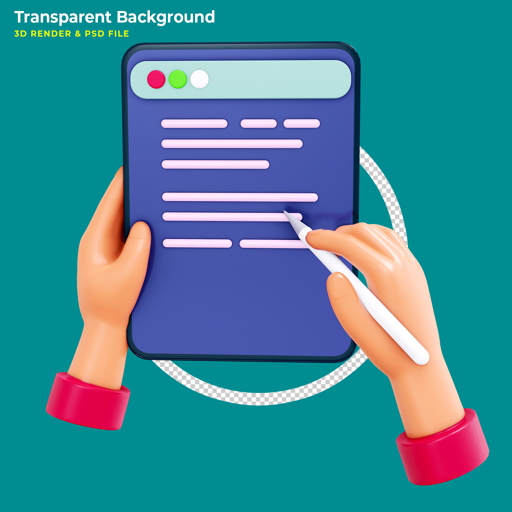

HOBBIES

Web Development
It is the work involved in developing a website for the Internet or an intranet. Web development can range from developing a simple single static page of plain text to complex web applications, electronic businesses, and social network services.

Learning
It is the process of acquiring new understanding, knowledge, behaviors, skills, values, attitudes, and preferences.

Writing
It is a medium of human communication which involves the representation of a language through a system of physically inscribed, mechanically transferred, or digitally represented symbols.